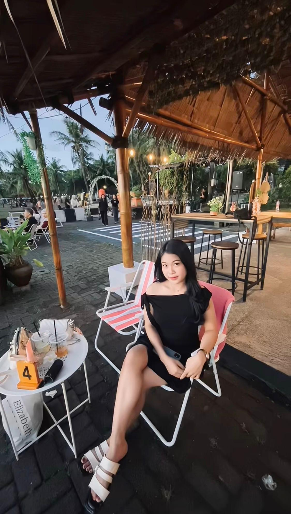
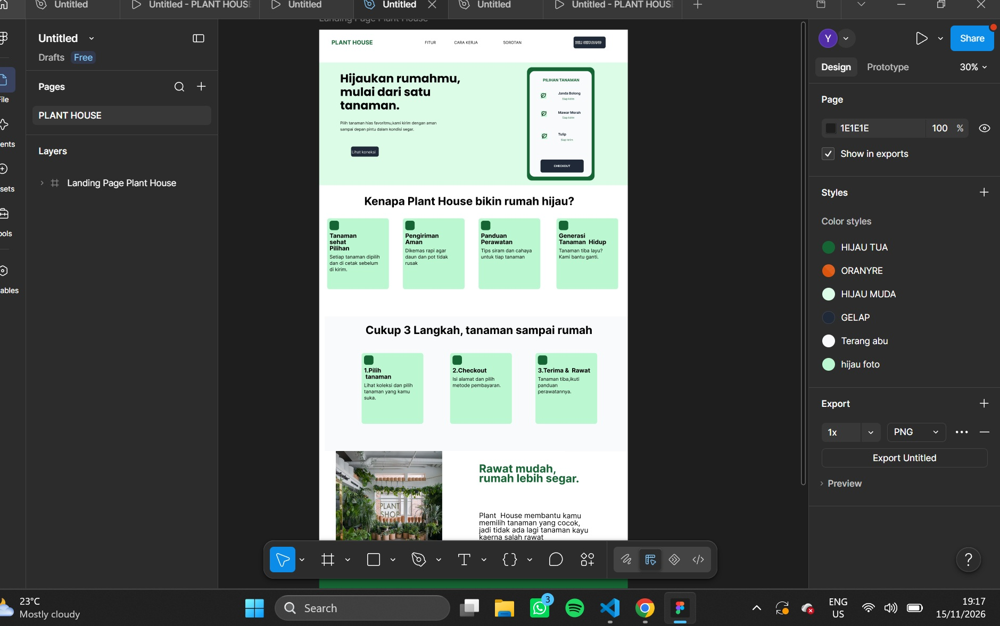
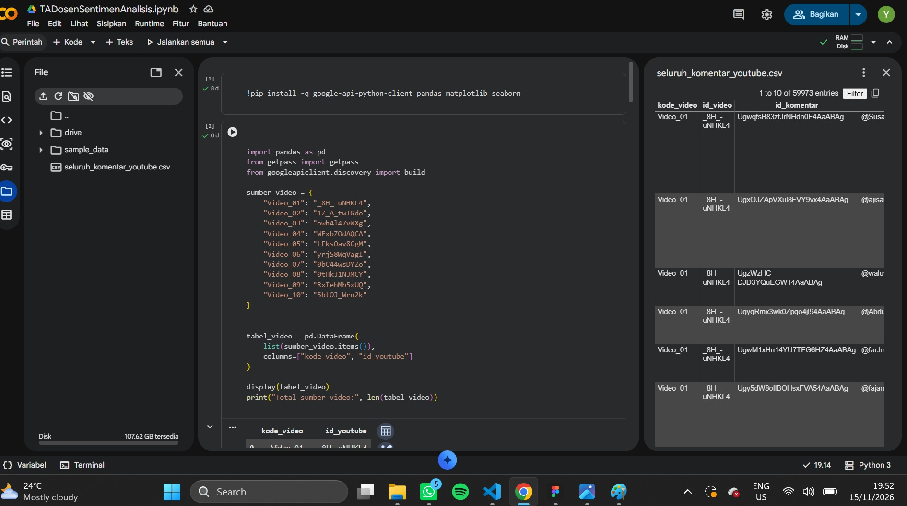

Halo, saya
Yuli Maruru
Mahasiswa Sistem Informasi yang suka mengubah ide menjadi tampilan dan aplikasi sederhana. Masih belajar, terus bertumbuh.

Tentang saya
Masih belajar, terus bertumbuh.
- Nama lengkap
- Yuli Maruru
- Program studi
- S1 Sistem Informasi
- Fakultas
- Fakultas Teknologi Informasi
- Universitas
- Universitas Kristen Satya Wacana
- Angkatan
- 2026
Saya adalah mahasiswa yang tertarik pada dunia teknologi informasi, khususnya pembuatan website, desain antarmuka, dan pemrograman.
Melalui perkuliahan dan tugas praktikum, saya mulai mengenal bagaimana sebuah ide dapat dikembangkan menjadi tampilan dan aplikasi sederhana. Saya senang mencoba hal baru, mempelajari tools digital, serta memperbaiki hasil pekerjaan dari setiap proses yang saya jalani.
Saat ini saya sedang memperdalam dasar pengembangan web dan pemrograman agar dapat membuat karya digital yang bermanfaat dan mudah digunakan.
Keahlian
Kemampuan yang sudah saya kenal dan terus saya kembangkan melalui latihan serta proyek. Klik salah satu untuk melihat detailnya.
Galeri Proyek & Karya Pribadi
Beberapa karya dan proyek yang telah saya kerjakan.

Desain UI/UX Website Plant House
Perancangan desain antarmuka website toko tanaman hias online menggunakan Figma. Proyek ini mencakup tampilan landing page, pilihan tanaman, informasi produk, dan proses pemesanan.

Pengumpulan Data untuk Analisis Sentimen YouTube
Proyek pengumpulan data komentar dari 10 video YouTube menggunakan Python dan YouTube Data API. Data diolah menggunakan Pandas sebagai persiapan analisis sentimen.
Makalah Media Sosial dan Kegiatan Belajar Mahasiswa
Makalah studi literatur yang membahas hubungan penggunaan media sosial dengan kegiatan belajar mahasiswa, termasuk dampaknya terhadap konsentrasi dan prestasi akademik.
Perjalanan Belajar Saya
Setiap pengalaman adalah proses untuk menjadi pribadi yang lebih baik dan terus berkembang.
Jambore Nasional V SMGT
Mengikuti kegiatan Jambore Nasional dan mendapatkan pengalaman dalam kerja sama, kedisiplinan, serta kebersamaan.
OrganisasiAnggota OSIS
Melatih kepemimpinan dalam berorganisasi, meningkatkan kepedulian, dan belajar bertanggung jawab terhadap tugas.
KepemimpinanPengurus PPGT
Belajar berorganisasi, membangun hubungan sosial, serta mengembangkan kemampuan bekerja sama dalam sebuah komunitas.
Pengembangan DiriMahasiswa Sistem Informasi
Memulai perjalanan kuliah di Universitas Kristen Satya Wacana. Mulai mempelajari pemrograman, desain UI/UX, dan pengembangan website.
PendidikanMenjadi Lebih Berkembang
Terus meningkatkan kemampuan di bidang teknologi informasi dan menciptakan karya digital yang bermanfaat.
Target Masa DepanPerjalanan saya
Pendidikan dan pengalaman berorganisasi.
-
2026 - sekarang
S1 Sistem Informasi
Universitas Kristen Satya Wacana. Berfokus pada analisis sistem, manajemen basis data, proses bisnis, pemrograman, dan perancangan sistem informasi.
-
2025 - 2026
Pengurus PPGT
Terlibat dalam kepengurusan dan kerja sama tim organisasi.
-
2024 - 2025
Anggota OSIS
Melatih kepemimpinan dalam berorganisasi, meningkatkan kepedulian dan tanggung jawab.
-
2023 - 2026
SMA Negeri 4 Luwu, Jurusan Teknik
Mempelajari Matematika, Fisika, dan Geografi sebagai fondasi logika pemecahan masalah serta analisis spasial sebelum melanjutkan ke bidang Sistem Informasi.
-
2022
Jambore Nasional V SMGT
Memahami dan terlibat dalam misi Allah, menumbuhkan kepedulian sosial, membangun persekutuan, dan kaderisasi.
Sertifikasi dan penghargaan
My Growth Journey
Terus Belajar, Terus Bertumbuh
Continuous Learning
Selalu terbuka untuk mempelajari ilmu, keterampilan, dan teknologi baru.
Technology Exploration
Senang mengeksplorasi dunia teknologi, khususnya pengembangan website dan aplikasi.
Personal Growth
Berusaha meningkatkan kemampuan, kedisiplinan, dan rasa percaya diri.
New Experiences
Berani mencoba hal baru dan menjadikan setiap pengalaman sebagai pembelajaran.
Hubungi saya
Isi formulir di bawah ini, lalu pesanmu akan siap dikirim lewat email.